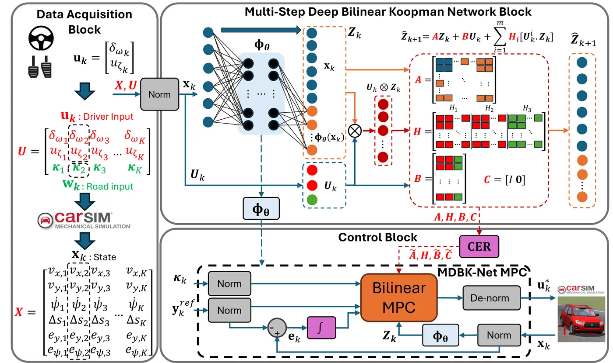
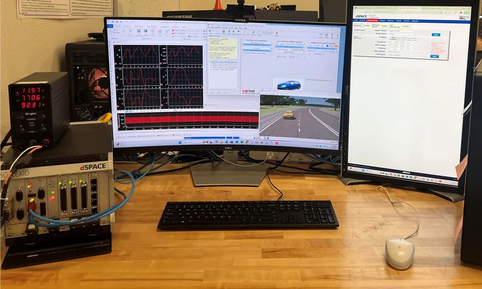
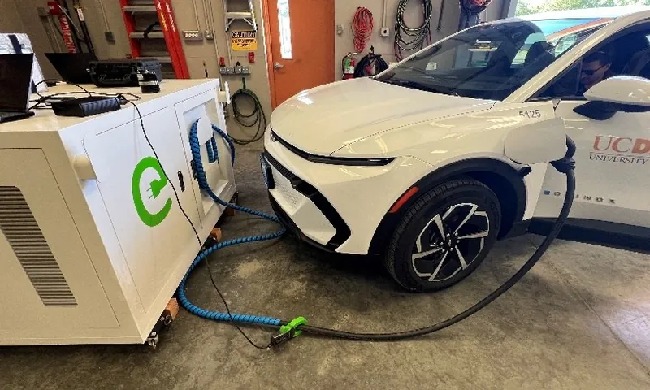
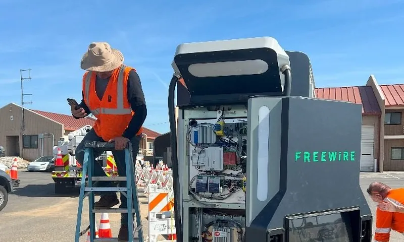

Farhang Motallebi Araghi, Ph.D.
Mechanical engineer working on modeling, control, and test of vehicle and energy systems, from first-principles models to hardware-in-the-loop, dynamometer, and field validation.
Controls, simulation, and test, applied to energy
Modeling & control
MPC, dynamic programming, data-driven Koopman models, engine throttle control.
Test & validation
dSPACE SCALEXIO HIL/SIL, chassis dynamometer, CAN data, field testing.
Energy systems
EV charging hardware, energy management, lifecycle cost analysis.
Mechanical design
SolidWorks product development, ANSYS CFD, plant and equipment design.
From mechanical design to controls and energy research
Hydromechanical Design Engineer
HVAC and air distribution; hydropower trash racks in SolidWorks and ANSYS CFX; equipment procurement and commissioning.
Technical Sales & Applications Engineer
Control valves for oil and gas; steam-network audits, equipment sizing, and steam-trap testing.
Ph.D. Research, DOE Projects
Eco-driving control, energy management with ITS, deep-learning emissions models, AV dynamometer testing.
Product Development Engineer
Patented ultra-compact water filtration system for RVs, from SolidWorks and 3D-printed prototypes to NSF certification.
Postdoctoral Researcher
Lead Researcher on Caltrans charging projects; commissioned dSPACE SCALEXIO HIL/SIL; Koopman-based MPC.
Education: Ph.D. Mechanical Engineering (WMU, 2023) · M.Sc. Automotive Engineering (IUST, 2015), thesis on electronic throttle control for adaptive cruise control · B.Sc. Mechanical Engineering (Semnan, 2012)
Models built for control, validated in real time
- Deep bilinear Koopman model + MPC (IEEE Access, 2026): learned vehicle dynamics that keep MPC convex for real-time use; lower tracking error than baseline controllers in HIL.
- Eco-driving control (IEEE TCST 2024; SAE 2023; IFAC 2021): energy-optimal speed planning with dynamic programming, GA, and PSO using real traffic-signal data.
- Predictive energy management (Energies 2021; SAE 2022): velocity-predictive control for connected hybrid EVs.
- Engine control roots: M.Sc. thesis on modeling and optimizing an electronic throttle system for adaptive cruise control.

Taking algorithms from model to hardware
- dSPACE SCALEXIO HIL/SIL: led selection, acquisition, and commissioning at UC Davis; Simulink, ConfigurationDesk, and CarSim RT running on the real-time target.
- Chassis dynamometer: calibrated against Argonne National Laboratory data for UDDS and HWFET, including road-load tuning for an AV sensor suite.
- Autonomous dyno testing: drive-by-wire longitudinal control with a ROS speed-tracking node; measured sensing and compute power draw.
- Data: CAN logging (Vector CANalyzer/CANoe), Python pipelines, correlation with NREL FASTSim models.

Charging hardware in the field for Caltrans
- Task 4409 (Lead Researcher): procured, installed, and field-tested the EVESCO EVES-6060-NA and FreeWire Boost Charger 200. Measured 87–91% charging efficiency; compatible with all seven priority fleet EVs.
- Battery insight: showed the FreeWire’s 98.5% SOC setpoint accelerates degradation; recommended 55–70%.
- Task 4482 (Lead Researcher): lifetime cost–benefit of mobile DC fast chargers using Geotab fleet data.
- Tasks 4480 & 4483: on-site vs. public charging cost-benefit, grid-readiness screening, and optimal charger planning.
- Routing research: fleet sizing and routing for mobile fast chargers (arXiv 2025).


Hands-on design, from concept to certified product
- Blu Technology: engineered and prototyped (SolidWorks, 3D printing) the first patented ultra-compact water filtration system for the RV industry, and coordinated its certification to California’s NSF standard for lead and contaminant removal.
- ISATIS Engineering: designed and supervised hydromechanical systems: HVAC and air distribution (Carrier software) and hydropower trash racks (SolidWorks, ANSYS CFX).
- Field execution: procured and commissioned equipment for a water distribution project; supervised installation and resolved unmet specifications.
- Spirax Sarco: steam-usage estimation, plant equipment sizing, steam-network audits, and troubleshooting for industrial clients.
- CAD: SolidWorks, CATIA, AutoCAD, PDMS.
Tools I work in
Control & optimization
Simulation & HIL
Programming & ML
Test & vehicle
Mechanical design
Data
What I would bring to the linear generator
Physics-based models + modern control
Engine throttle control in my M.Sc., MPC and DP for powertrains, and control-oriented models learned from data, all validated in real time.
Test programs that explain the data
Dyno calibration against Argonne data, instrumented experiments, and Python analysis correlated with physics-based models.
Root cause across hardware and software
HIL/SIL commissioning, CAN debugging, and field testing of power hardware, including battery-degradation findings that changed recommended operation.
Design through certification
SolidWorks product development to NSF certification, ANSYS CFD, and equipment procurement and commissioning.
Let’s talk about clean, reliable power.
Based in San Jose, CA. Available to start December 1.